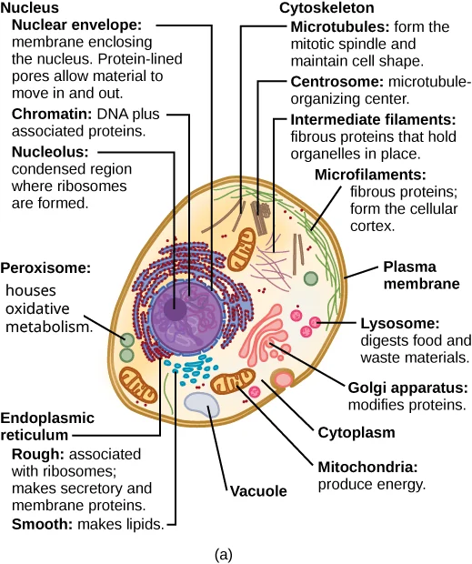
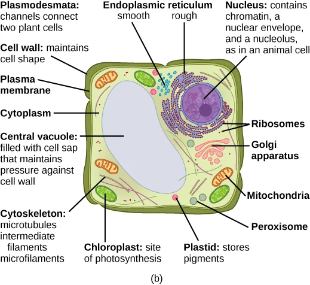
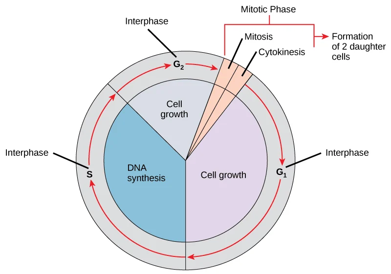
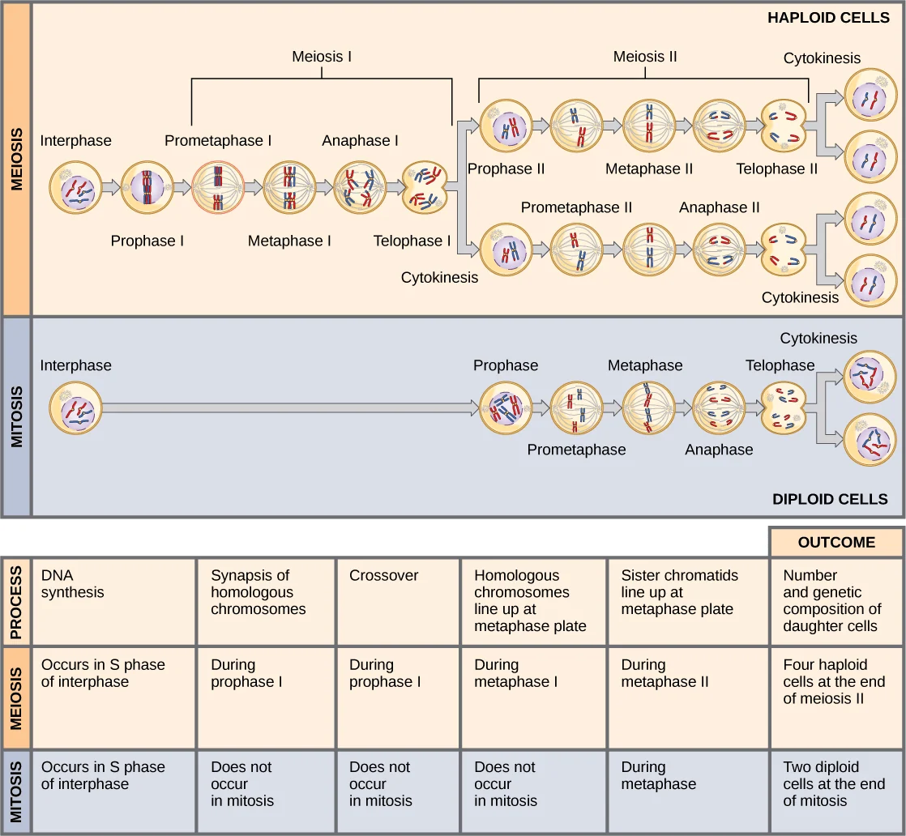

Cells: Structure, Function and Division
TEAS objective S.2.1 · Biology
What the TEAS expects: you can name the main organelles and their jobs, tell plant cells from animal cells and prokaryotes from eukaryotes, put the levels of organization in order, and compare mitosis with meiosis.
1. Levels of organization
Atom → molecule → organelle → cell → tissue → organ → organ system → organism.
The cell is the smallest unit that is alive. A tissue is a group of similar cells doing one job; an organ is built from several tissue types.
2. Organelles and their jobs

Tap or click the figure to open it full size (in a new tab).
Swipe the table sideways to see every column. →
| Organelle | Job | Memory hook |
|---|---|---|
| Nucleus | Holds the DNA; controls the cell | Control center |
| Nucleolus | Region in the nucleus where ribosome parts are made | |
| Ribosomes | Build proteins | Protein factories |
| Rough ER | Studded with ribosomes; makes proteins for membranes and for export | |
| Smooth ER | Makes lipids; detoxifies drugs (abundant in liver cells) | |
| Golgi apparatus | Modifies, sorts and packages proteins for shipping | Post office |
| Mitochondria | Aerobic (oxygen-using) cellular respiration; make most of the cell's ATP, the molecule cells use for energy | Power plant |
| Lysosomes | Digest worn-out parts and debris with enzymes | Recycling center |
| Cell (plasma) membrane | Controls what enters and leaves; selectively permeable | Gatekeeper |
| Cytoskeleton | Protein fibers that give shape and move things inside the cell | |
| Centrioles | Help organize the spindle that pulls chromosomes apart during division (animal cells) |
Path of an exported protein: ribosome on rough ER → ER → Golgi → vesicle (a small membrane bubble) → cell membrane → out of the cell.
Check 1: A cell makes large amounts of a protein hormone for export. Which two membrane-bound organelles would you expect to be especially abundant? Answer at the bottom of the page.
3. Plant cells vs animal cells

Tap or click the figure to open it full size (in a new tab).
Plant cells have most of the organelles listed above plus three structures animal cells lack:
- Cell wall (made of cellulose) outside the membrane, for support.
- Chloroplasts, where photosynthesis happens.
- A large central vacuole that stores water and keeps the cell firm.
Plant cells also have mitochondria. Chloroplasts make sugar; mitochondria break it down for ATP.
Going the other way, animal cells have lysosomes and centrioles, which plant cells lack.
4. Prokaryotes vs eukaryotes
Swipe the table sideways to see every column. →
| Prokaryotes (bacteria, archaea) | Eukaryotes (animals, plants, fungi, protists) | |
|---|---|---|
| Nucleus | No; DNA sits in a region called the nucleoid | Yes |
| Membrane-bound organelles | No | Yes (mitochondria, ER, Golgi…) |
| Ribosomes | Yes (smaller) | Yes |
| Cell wall | Most have one | Plants and fungi have one; animal cells do not |
| Size | Usually much smaller | Larger |
Memory hook: pro = "before" a nucleus; eu = "true" nucleus. Every cell has a cell membrane, cytoplasm, ribosomes and DNA.
5. Moving things across the cell membrane
The membrane is selectively permeable: some things cross freely, others need help.
- Diffusion: particles spread from high to low concentration. No energy needed (passive). Oxygen and carbon dioxide cross this way.
- Facilitated diffusion: still high to low and passive, but through a protein channel or carrier (glucose enters many cells this way).
- Osmosis: diffusion of water across a membrane, toward the side with more dissolved solute.
- Active transport: moving particles from low to high concentration, "uphill." Requires ATP and a protein pump (the sodium-potassium pump).
What happens to a red blood cell in different solutions:
Swipe the table sideways to see every column. →
| Solution outside the cell | Solute concentration vs the cell | Water moves | The cell |
|---|---|---|---|
| Isotonic | Equal | In and out equally | Stays the same |
| Hypotonic | Lower | Into the cell | Swells, may burst |
| Hypertonic | Higher | Out of the cell | Shrinks |
Memory hook: hypOtonic makes the cell swell like an O.
6. The cell cycle and mitosis

Tap or click the figure to open it full size (in a new tab).
DNA is packaged into chromosomes. Before a cell divides, it copies each chromosome; the two identical copies, still joined, are called sister chromatids.
Most of a cell's life is interphase: it grows (G1), copies its DNA (S phase), and prepares to divide (G2). Then it divides: mitosis (the nucleus divides) followed by cytokinesis (the cytoplasm splits).
Stages of mitosis: PMAT
- Prophase: chromosomes condense and become visible; the nuclear envelope breaks down; the spindle (a framework of protein fibers) forms.
- Metaphase: chromosomes line up in the middle.
- Anaphase: sister chromatids are pulled apart to opposite ends.
- Telophase: two new nuclei form.
Some textbooks add a stage called prometaphase between prophase and metaphase. For the TEAS, PMAT is enough.
Check 2: In which stage of mitosis do the chromosomes line up across the center of the cell? Answer at the bottom of the page.
7. Mitosis vs meiosis

Tap or click the figure to open it full size (in a new tab).
Swipe the table sideways to see every column. →
| Mitosis | Meiosis | |
|---|---|---|
| Purpose | Growth, repair, replacing body cells | Making gametes (sperm and eggs) |
| Number of divisions | One | Two (meiosis I and II) |
| Daughter cells | 2, identical to the parent | 4, genetically different (in females, one egg plus small polar bodies) |
| Chromosome number (humans) | Stays 46 (diploid) | Halved to 23 (haploid) |
| Crossing over | No | Yes, in prophase I |
Diploid means two sets of chromosomes (46 in humans); haploid means one set (23).
Why halving matters: at fertilization, a 23-chromosome sperm and a 23-chromosome egg restore 46.
Common traps
- Saying plant cells lack mitochondria. They have both mitochondria and chloroplasts.
- Giving plant cells lysosomes or centrioles. Those are animal-cell structures.
- Getting osmosis backwards. Water moves toward the side with more solute.
- Putting organ before tissue. Cells → tissues → organs.
- Saying mitosis halves the chromosome number. Only meiosis does.
- Mixing up the ER and the Golgi. The ER makes; the Golgi packages and ships.
Learn it properly
- Prokaryotes vs eukaryotes: OpenStax Concepts of Biology, Section 3.2 Comparing Prokaryotic and Eukaryotic Cells: OpenStax (opens in a new tab)
- Organelles: Section 3.3 Eukaryotic Cells: OpenStax (opens in a new tab)
- The cell membrane: Section 3.4 The Cell Membrane: OpenStax (opens in a new tab)
- Cell cycle and mitosis: Section 6.2 The Cell Cycle: OpenStax (opens in a new tab)
- Meiosis: Section 7.2 Meiosis: OpenStax (opens in a new tab)
Check answers
- Rough ER and Golgi apparatus. Ribosomes on the rough ER build the protein, and the Golgi packages it for export. (Ribosomes are also busy, but they are not membrane-bound.)
- Metaphase. Memory hook: Metaphase = Middle.
ESCC TEAS Prep · Original study material written for Eastern Shore Community College. Figures from OpenStax, Concepts of Biology, licensed CC BY 4.0.